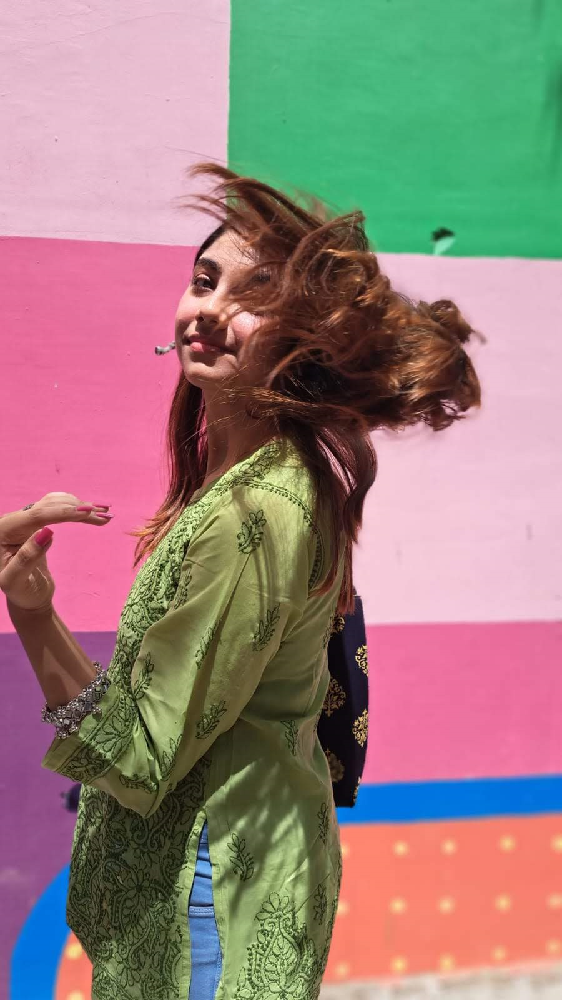
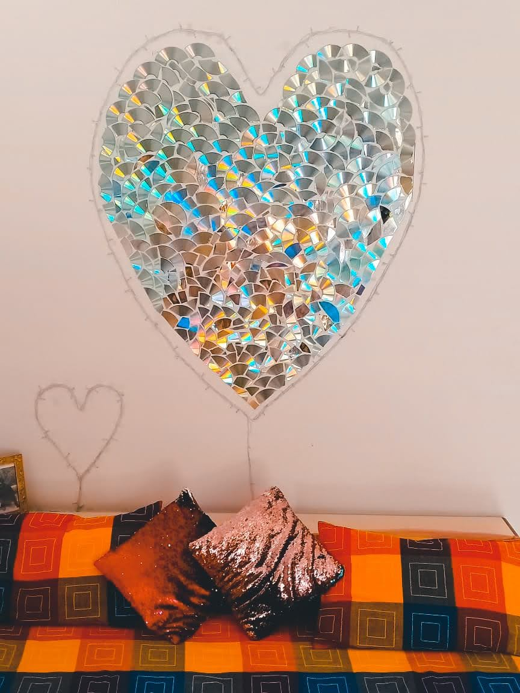
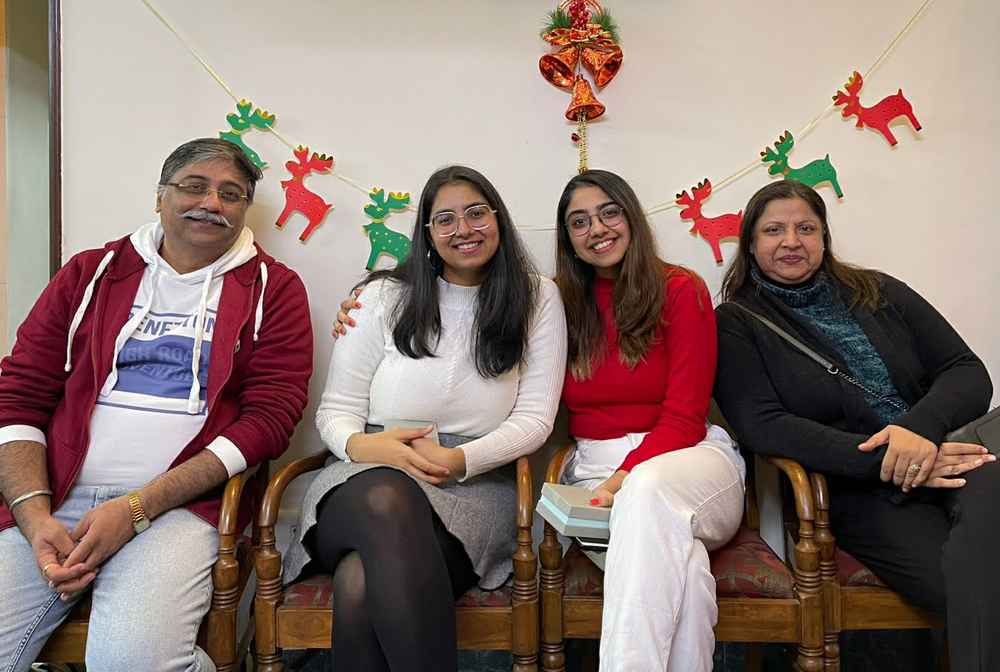

My Story
Hello! I'm Riya Dua, a bioinformatics enthusiast currently pursuing my Master's in Bioinformatics at Johns Hopkins University. Originally from New Delhi, India, I bring a rich cultural background to my academic journey.
Apart from my academic pursuits, I have a deep passion for art and creativity. I find solace in creating intricate mandalas, where each pattern tells a story of balance and harmony. Each mandala I craft is not just a piece of art but a reflection of my inner world, where patterns symbolize balance and unity.


Photography is another avenue where I express myself, particularly through phone photography, capturing the essence of everyday life and special moments.
Family plays a significant role in my life. I am fortunate to have the unwavering support of my parents and a younger sister who inspire me to strive for excellence in everything I do.
Career Goals
My professional journey is driven by a keen interest in exploring advanced data analysis techniques and harnessing the power of machine learning to advance healthcare and personalized medicine. With a background in bioinformatics and data analysis, I am passionate about leveraging these disciplines to uncover actionable insights from complex biological datasets.
I am particularly enthusiastic about enhancing my proficiency in sophisticated data analysis methodologies, including the integration of genomic, transcriptomic, and proteomic data with machine learning. By employing these techniques, I aim to unravel intricate biological mechanisms underlying diseases and develop novel approaches for diagnosis, treatment, and prevention. Central to my career vision is the impact on healthcare delivery and personalized medicine. I am committed to contributing to transformative advancements in these fields, translating research findings into practical applications that improve patient outcomes globally. I envision playing a role in shaping the future of healthcare by bridging the gap between computational insights and clinical practice. Continuous learning is fundamental to my professional growth. I am dedicated to staying abreast of emerging technologies and methodologies in bioinformatics and machine learning. Collaborating with multidisciplinary teams is essential to me, as it fosters innovation and enables holistic approaches to solving complex healthcare challenges.